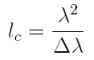
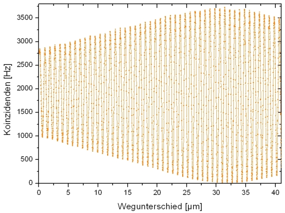
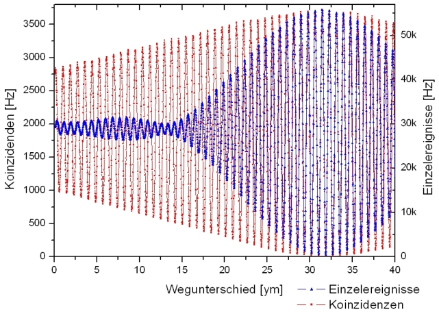
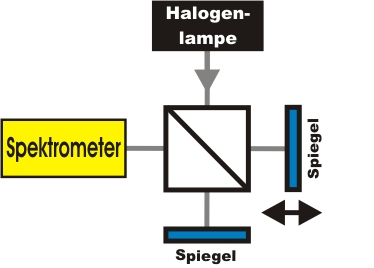

Interferenz Kapitel 5:
Kohärenz,
Energiekorrelation und weißes Licht
Im folgenden Kapitel wird die Kohärenzlänge von einzelnen Photonen mit Hilfe eines Interferometers experimentell bestimmt. Im zweiten Abschnitt wird der Zusammenhang zwischen der Kohärenz und der Energiekorrelation gezeigt. Im letzen Abschnitt geht es um die Interferenz von hellem Licht mit geringer Kohärenzlänge.
Interferenz und Kohärenz
Für das Interferenzexperiment mit einzelnen Photonen wurde eine angekündigte Einzelphotonenquelle verwendet (Abb.1). Die Grundlage der Einzelphotonenquelle ist die Zwillingsphotonenquelle (PDC), die paarweise einzelne Photonen aussendet. Das eine Photon (links) wird zum Triggern verwendet, das andere Photon (rechts) wird in ein Glasfaserkabel eingekoppelt und zum Interferometer geleitet. Für die Experimente in den letzten Kapiteln wurden nur die Ereignisse ausgewertet, bei denen gleichzeitig ein Trigger-Photon und ein Photon im Interferometer vorhanden war (Koinzidenz). Die Messungen im Interferometer können allerdings auch ohne das Trigger-Photon ausgewertet werden. Auch hier ist ein Interferenzmuster sichtbar, das aber mit einer klassischen elektromagnetischen Welle erklärt werden kann.
Abb. 1 Angekündigte Einzelphotonenquelle Links: Skizze mit Filtern, rechts: Experiment
Interferenz ist nur dann beobachtbar, wenn die Kohärenzlänge der Photonen größer als der Weglängenunterschied im Interferometer ist. Sobald der Weglängenunterschied so groß wie die Kohärenzlänge der einzelnen Photonen ist, wird die Sichtbarkeit der Interferenz geringer (Abb. 2). Ist der Weglängenunterschied größer als die Kohärenzlänge, so kann keine Interferenz mehr beobachtet werden. Die Kohärenzlänge der Photonen im Interfereometer beträgt mit einem Bandpassfilter von 810±10nm ca. 60µm. Diese Größe kann experimentell über die Breite der symmetrischen Messkurve in Abbildung 2 oder theoretisch über die folgende Formel bestimmt werden:
.

Abb. 2: Abnahme der Sichtbarkeit der Interferenz (Filter 810±10nm).
Der maximale Wegunterschied des Verschiebetisches beträgt 40µm.
Interferenz, Kohärenz und Energiekorrelation
Die Zwillingsphotonenquelle sendet paarweise Photonen mit einer Wellenlängenbreite von bis zu ca. 80nm aus. Der detektierte Wellenlängenbereich kann mit optischen Bandpassfiltern vor den Detektoren begrenzt werden. Je schmaler der Filter, desto länger ist die Kohärenzlänge der angekündigten Photonen. Ein Kohärenzphänomen zwischen dem Triggerphoton und dem Photon im Interferometer ist in Abb. 3 erkennbar. Beide Kurven stammen aus der gleichen Messung und wurden nur unterschiedlich ausgewertet. Die blaue Kurve wurde ohne das jeweilige Triggerphoton ausgewertet. Die nicht angekündigten Photonen passierten dabei einen Filter mit einer Breite von 40nm (Abb. 3 Einzelmessung). Die Kohärenzlänge der nicht angekündigten Ereignisse beträgt ca. 16µm. Für die rote Kurve in Abb. 3 wurden nur die über den Triggerdetektor angekündigten Ereignisse ausgewertet. Vor dem Triggerdetektor befand sich dabei ein Filter mit einer Breite von 10nm (Abb. 3 Koinzidenzen). Die Kohärenzlänge der angekündigten Photonen beträgt ca. 60µm und unterscheidet sich deutlich von der Kohärenzlänge der Einzelereignisse. Die Kohärenzlänge der Photonen im Interferometer kann durch entsprechende Auswertung mit dem Triggerdetektor verändert werden. Das Phänomen ist über die Energieerhaltung bei der Erzeugung der beiden Photonen erklärbar. Die Energie der beiden Photonen ist immer korreliert zueinander. In Fachkreisen spricht man hier von Energie- oder Frequenzkorrelation.

Abb. 3: Unterschiedliche Kohärenzlänge der Photonen im gleichen Experiment
Blaue Kurve: Einzelereignisse (Filter 800±40nm)
Rote Kurve: Koinzidenzen (Filter Trigger: 810±10nm)
Interferenz von hellem weißem Licht
Interferenz kann auch mit hellem Licht im Interferometer beobachtet werden. Als Lichtquelle wird hierzu eine normale Halogenlampe (thermisches Licht) verwendet, das eine sehr geringe Kohärenzlänge besitzt. Als Detektor kann das bloße Auge oder ein Spektrometer eingesetzt werden (Abb. 4). Im Video 1 wurde der Verschiebetisch um ca 100nm/s bewegt und das jeweilige Spektrum aufgezeichnet. Deutlich ist eine Interferenz der einzelnen Wellenlängen erkennbar.
Aufgrund der geringen Kohärenzlänge einer thermischen Lichtquelle kann das Verfahren der Weißlichtinterferenz zur Justierung eines Interferometers eingesetzt werden. Industriell wird die Weißlichtinterferometrie für präzise Längenmessungen verwendet. Ein weiteres Anwendungsbeispiel für das Weißlichtinterferometer ist die Kohärenztomografie, bei der dreidimensionale Strukturen erfasst werden.

Abb. 4: Interferometer mit hellem weißem Licht und Spektrometer
|
|
Video 1: Spektrum
von weißem Licht nach einem Michelson-Interferometer
x-Achse: Wellenlänge: 450-930nm, y-Achse: Intensität
Der Verschiebetisch bewegt sich um ca. 100nm/s
Originaldaten aus dem Experiment: Interferenz, Kohärenz und Energiekorrelation
Zum Kapitel 6: Interferenz und Beugung am
Doppelspalt
Autor: P. Bronner, Dezember 2008